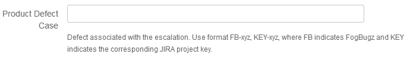

Working an Escalation¶
CPE DU/DL/DC, CPE Escalations, and CPE Help
While the Escalations is being Worked by CPE¶
Keep the escalation/CSD ticket in the “Fix in Progress” staus
Provide DAILY ticket updates for all tickets you own, regardless of region, where the status is “Fix In Progress”, and use the template:
- What
- What Next
- Who
- When
Use external comments when entering comments to be shared with developers, support and CPE (any one with a JIRA license will be able to see these comments)
Update the Outage information in the ‘default’ and ‘outage’ tabs to include important information used to gather quality metrics. This includes:
- (Default tab)
- Outage Date
- Outage Duration (only for DU cases)
- (Outage tab)
- Volumes impacted (only for DU/DL cases)
- When was the problem introduced
- Preventable
- Recovery
- Qualified (only for DU/DL cases)
- Outage Awareness
- Test Escape Likely Phase
- Regression
Stingray Information and Instructions¶
Basic Information¶
“Stingray” is a large directory where case-related data can be stored.
This is where all data ends up that is uploaded using https://upload.netapp.com and ftp://ftp.netapp.com
Files on Stingray are available via NFS, CIFS/SMB, and HTTP
Acess is handeld by NetApp SSO
Data on Stingray is organized by SAP case number
Once the SAP case is closed for 30 (???) days the data in the related directory is automatically archived.
Stingray has a European cousin called “Light”
- If the files you are looking for are not on Stingray then try the same instructions as below but use “light” instead of “stingray”
Do the following to view logs on Stingray or to copy logs to bdr-scratch as needed.
How to Access Data on Stingray via NFS / SSH (KB Article) :¶
Stingray via NFS / SSH:
1. SSH to the RTP Cycle Servers:
ssh <netapp_username>@<stingray_name>
For Example
ssh dsouzas@cyclrtp.corp.netapp.com
Or
SSH 10.103.161.239
2. Login using SSO Credentials
--> Use your shortname, i.e. "rossetto"; not "edward.rossetto"
3. Change directory to where "Stingray" is mounted:
cd /x/eng/cs-data/<case-number>
For Example:
cd /x/eng/cs-data/2007564510
4. View, search, and manipulate the files as normal using cat, less, grep, etc. (your ssh'd into a regular ole Linux server).
a. Home directories are persistent; so scripts, etc. can be copied and left on there for ease of log parsing
How to Access Data on Stingray via CIFS / SMB:¶
Stingray via CIFS / SMB:
1. Using a file explorer / browser:
:: \\stingray-smb.corp.netapp.com\\data\\<case-number>
Example::
:: \\stingray-smb.corp.netapp.com\\data\\2007564510
How to Access Stingray via HTTP:¶
Stingray via HTTP:
1. Using a web browser, go to:
https://stingray.corp.netapp.com/<case-number>
For Example:
https://stingray.corp.netapp.com/2007663350
How to transfer files from Stingray to BDR-scratch:¶
Transfer files from Stringray to BDR:
1. Go to http://stingray.corp.netapp.com/<case-number> and determine the full HTTP path for the file that you would like to transfer.
For Example:
http://stingray.corp.netapp.com/2007686225/2007686225.supportbundle.alln01-fab3-pib-az2-002.tar.gz
2. Log into BDR-scratch
3. If it has not already been done, create the directory to which you would like to copy the file.
mkdir /scratch/support/JPMC_2007686225
4. Use wget to copy the file from Stingray to BDR-scratch
wget <path-to-file-on-stingray> <path-to-directory-on-scratch>
For Example:
wget http://stingray.corp.netapp.com/2007686225/2007686225.supportbundle.alln01-fab3-pib-az2-002.tar.gz /scratch/support/JPMC_2007686225
Additional Notes¶
If files are uploaded and are not properly attatched to a case they will end up in /x/eng/cs-data/NoCallNumber or /x/eng/euro-data/NoCallNumber
Core files may end up in /x/eng/cs-cores
For additional details see the internal information in KB 1029870: “How to upload a file to NetApp”
If you get the following error on login to stingray.:
ssh SSOshortname@cyclrtp.corp.netapp.com
SSOshortname@cyclrtp.corp.netapp.com's password:
Last login: Thu Feb 28 16:07:09 2019 from 10.116.156.1
Could not chdir to home directory /u/SSOshortname: No such file or directory
Then open a ticket with https://netapp.service-now.com
If the Escalation has a Defect Associated To It¶

- As the owner of the escalation, you own the defect until it gets discussed and approved in the corresponding bugcourt.
- If this is a new defect, create a defect in the corresponding backlog (the one for the engineering team responsible to analyze the request), and link the escalation case to it using the ‘Product Defect Case’ field in the corresponding ‘Edit’ screen.
- If this is an exisiting defect, link the escalation to it using the ‘Product Defect Case’ field in the corresponding ‘Edit’ screen.
The JIRA escalations are linked to defects using the ‘linked issues’ field AND the ‘Product Defect number’ field. Ideally we would only use the ‘linked issues’ field but unfortunately this doesn’t allow to link to Fogbugz or other bug tracking tools different than JIRA.
- As the owner of the escalation, keep the escalation open until
- The change has been committed to a branch,
- It’s been communicated to Support, and Support agrees to close the escalation.
- The escalation will remain open in the status ‘Fix in Progress’ until the fix is committed to a branch (this is part of the bug workflow that Lisa owns, so we can ask her for more details).
- Once the code changes have been committed to a branch, the escalation issue shall be transitioned to ‘Waiting for Release’ until the changes are released.
- Once the release with code changes have been made available to Support, the escalation issue can be closed.
- If the escalation needs a hotfix or an IDR (Interim Diagnostic Relief), follow hotfix process to enter a hotfix ticket and link the escalation case to it.
If you Need More Information¶
- If you need more information or to report a status back to support:
- Change the status of the escalation to “Need More Information”
- Enter an external comment and address it to the person from whom the information is requested (normally the Support Owner).
- Don’t change the assignee in the CSD Case (CPE will always own the escalation).
- Once the data is recieved and work can resume, change the status back to “Fix in Progress”.
If the Case Needs CPE Management Assistance¶
- If the request needs assistance from an escalation or CPE manager, change the status to “Escalation Management”.
- Assign the case to an escalation or CPE Manager.
- Communicate back to Support that the case is being owned by an escalation or CPE manager.